ナイスミドル スキーツアー
ミドル＆シニア世代をもっと元気にしたい！そんな思いで1977年からスタートしたナイスミドルツアーは、ミドル＆シニアスキーツアーとして日本一の規模を誇ります。スキーを通じて生涯の友を得る中高年の青春旅行として多くの方に愛されてきました。宿泊ツアーにもかかわらず1人参加率も高く、ほとんどの方が相部屋でご参加されます。新しいスキーライフをナイスミドルツアーから始めてみませんか？
ナイスミドルツアー6つの魅力
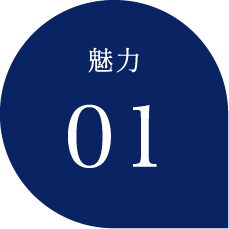
ミドルからシニア世代のスキーツアーとして
ダントツ日本一の規模！
学生や若者の参加が少なく、ミドルからシニア世代のスキーツアーとしてダントツ日本一の規模を誇ります（昨年度利用者1,600名/約5,000泊）。
また2回目以上の参加者が93.6％を占めるという驚きのリピーター率。この規模で、このリピーター率も日本のツアーの常識を覆す奇跡！
大人のためのスキーツアーが、このナイスミドルツアーの魅力です。
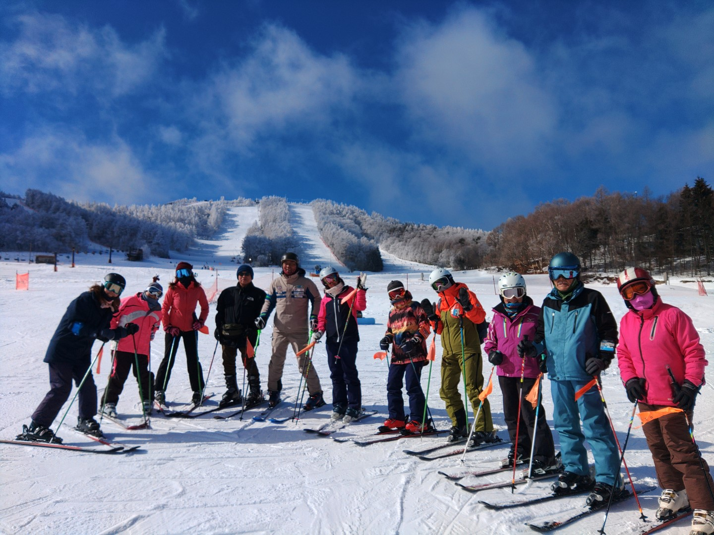
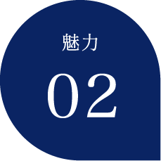
ご参加者の多くがナイスミドル！仕事の垣根を越え
生涯の仲間ができるツアー
子育てや仕事も落ち着き、自由な時間が使える世代の方のための新しいスキーツアーです。人生を豊かに楽しむためのスキーライフを一緒に始めませんか？
近年30～50代の参加者も増えてきましたが、まだまだ60代以上のお客様も多く、スキーという趣味を共有できる仲間が、このツアーで増える事間違いなしです。
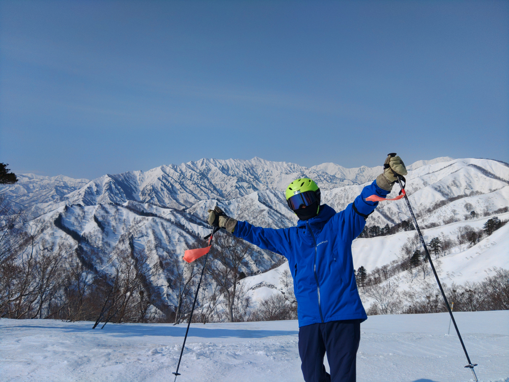
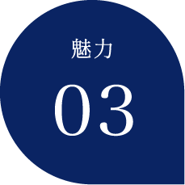
驚異的な満足度、リピーター率93.6％！
旅行代金は安くありません。
その代わり添乗員がツアーに同行し何から何まで皆様をケアします。
スキーを一緒に滑ってくまなくスキー場をご案内し、さらにはお仲間つくりにも貢献します。夜の宴会のお付き合いも...
ナイスミドルな皆様のために、少しランク上のツアーを心がけております！
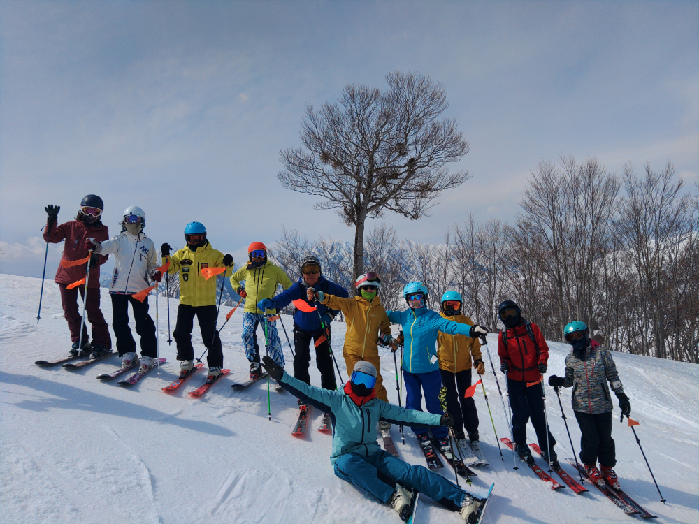
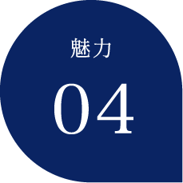
1人参加率は 驚きの89.1％
宿泊ツアーなのに、1名の参加がほとんどというのもナイスミドルツアーの大きな魅力。
“友人とツアーに行く”ではなく、“友人とツアーで会う”という趣味サークルのようなナイスミドルツアー。
最初はひとりで参加するのは少し勇気がいる...
それをリピーターの皆さまも理解しているからこそ、初めてご参加される方を快く迎え入れてくれます。
添乗員も初参加の方をケアしているので、どうぞご安心してご参加ください！
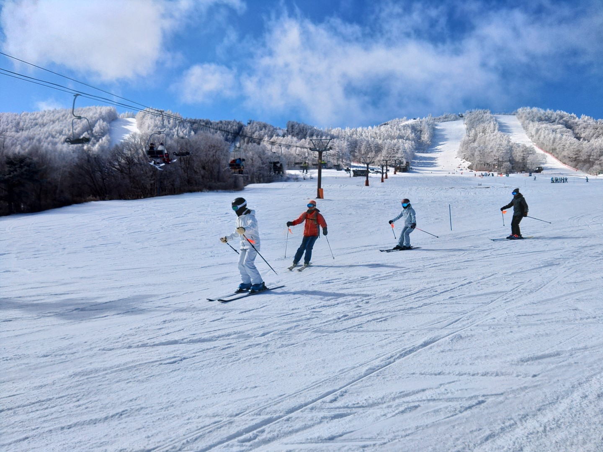
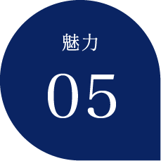
毎晩開催される親睦会でスキー仲間と仲良くなれる
夜には親睦会が開催。
お酒を酌み交わし語り合う親睦会・交流会が開催されるので、共通の趣味を持つ生涯の友人に出会えるのがナイスミドルツアー最大の魅力。
また相部屋での宿泊が、皆様同士が仲良くなる魅力のひとつでもあります。
ご夫婦でご参加されても、それぞれ男女別相部屋での宿泊をご指定される方もいらっしゃいます。
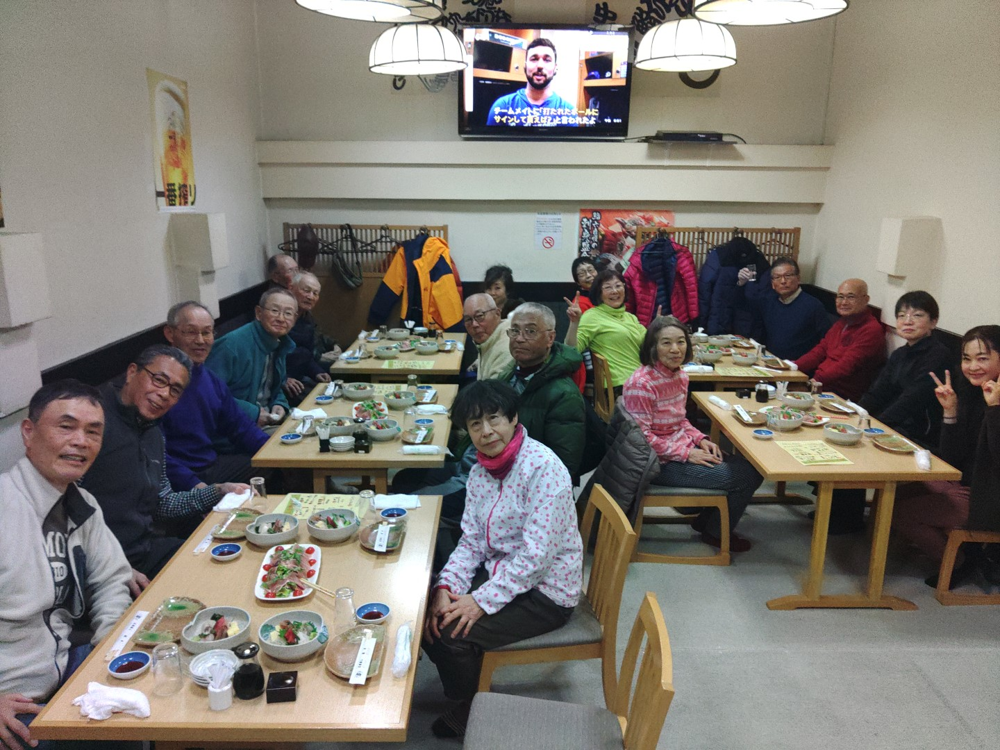
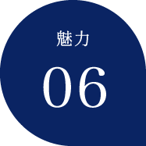
実際に添乗員がこのように同行してご案内
添乗員が現地からレポートした最新ツアーブログを通して、四季スキーの魅力をご確認ください。
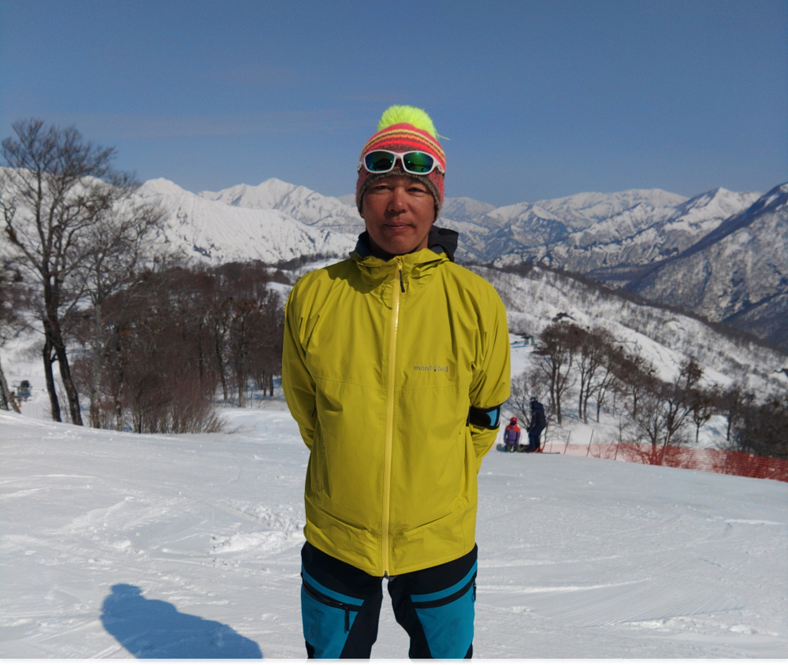
ナイスミドルツアーの特徴
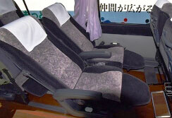
全席ゆったりシートのバスを利用！
- 後ろの方に気兼ねなくリクライニングシートを利用できるから、本当にらっく楽！
- 通常12列あるバス座席を10列に限定した全席ゆったりバスを利用しております。
※ツアーにより異なります。詳しくはお問合せください。
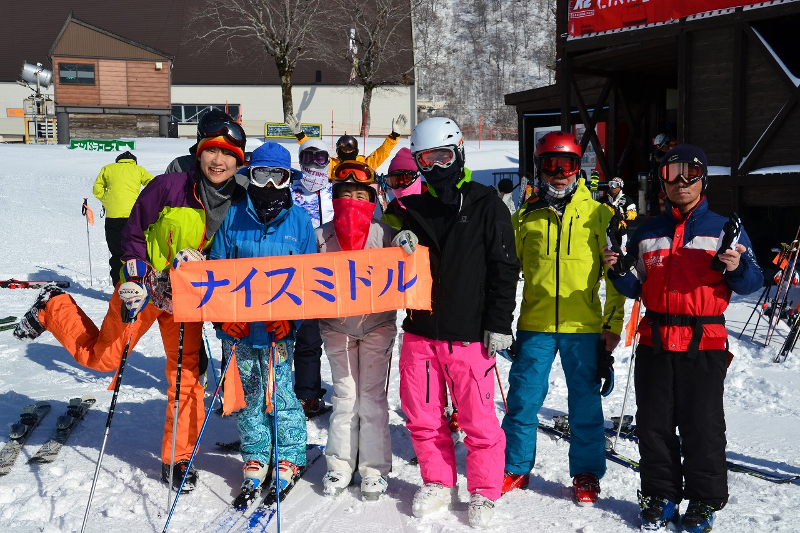
全日程ベテラン添乗員が同行します！
- 初めてのスキー場でコースが不安なお客様にコース案内。
- おいしい食事処・おすすめランチを紹介等、手厚くサポート致します。
※複数の宿泊施設を経由する場合は、片方の宿に添乗員は滞在となる場合がございます。
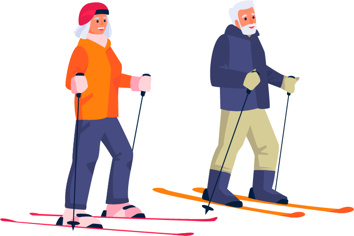
ナイスミドルツアーの
新しい仲間よ集まれ！！
初参加特典＆紹介特典のご案内
初参加のお客様
ナイスミドルツアーに初参加されたお客様には
初回のツアー参加時に
10,000円
キャッシュバック！
ご紹介くださったお客様
ナイスミドルスキーツアーに
新しい仲間を紹介してくださったお客様には
2,000円
キャッシュバック！